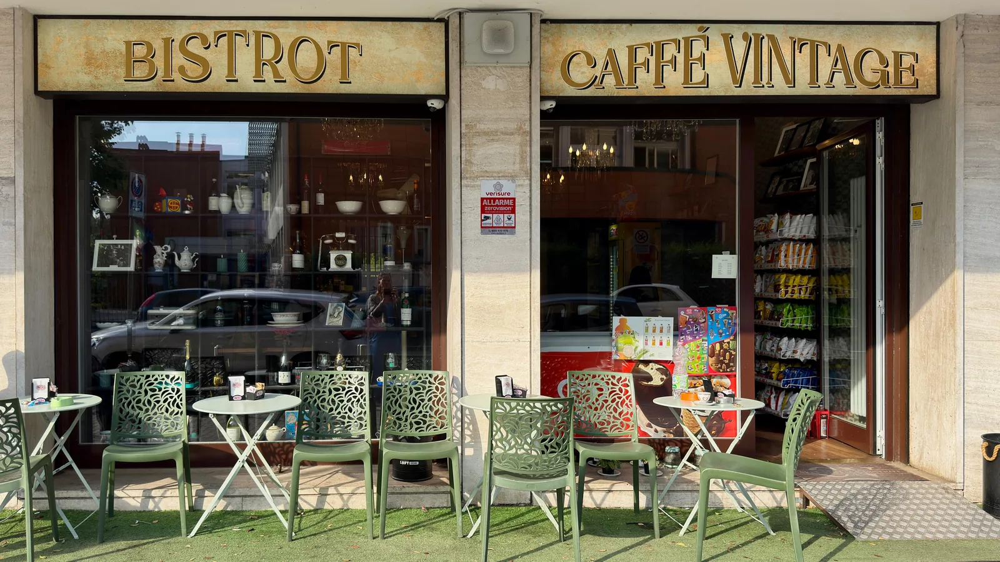
Varcare la soglia del Bistrot Caffè Vintage è come entrare in una cartolina d'altri tempi. Un'insegna dorata, un dehor con sedie verde salvia, una sala piena di memoria: telefoni a disco, radio d'epoca, figurine del Settanta, lampadari di cristallo. Dal caffè del mattino al cocktail della sera, un indirizzo dove il tempo rallenta e il gusto resta.
Varcare la porta del Bistrot è un piccolo esercizio di nostalgia. Il legno intarsiato dei tavoli, lo scaffale metallico che divide la sala dalla vetrina, le poltroncine di velluto con gambe dorate, un lampadario di cristallo che illumina la giornata.
Ma non è solo scenografia. Si viene qui per un cappuccino fatto a dovere e un cannolo al pistacchio appena farcito, per un pranzo leggero su ceramiche decorate, per un aperitivo lento con una carta cocktail che conta le sue trenta proposte. E, se fuori il tempo lo permette, per un caffè al dehor con il cane ai piedi.
Via delle Ande è un angolo tranquillo di Milano. Una volta dentro, però, potresti trovarti altrove: in una trattoria romana, in un bistrot di Parigi, nel retrobottega di un antiquario di provincia. Quel che conta è sentirsi a casa.
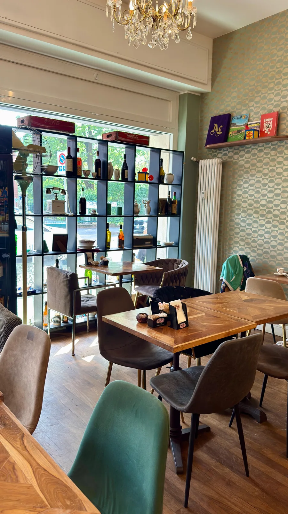
Miscele selezionate, cappuccini cremosi, estrazioni curate. Il caffè che apre la giornata.
Cannoli al pistacchio, bignè al cioccolato, crostatine, biscotti freschi. Sempre del giorno.
Pranzi leggeri, taglieri e piatti semplici serviti su ceramiche dipinte a mano.
Dall'aperitivo al dopocena. Classici e signature, curati come si deve.
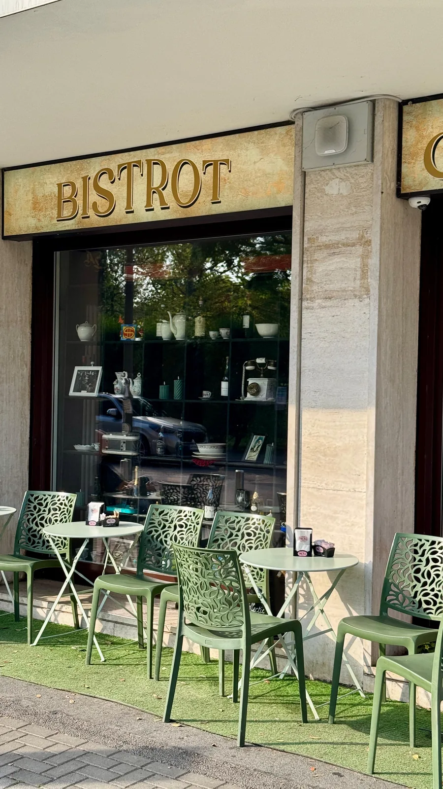
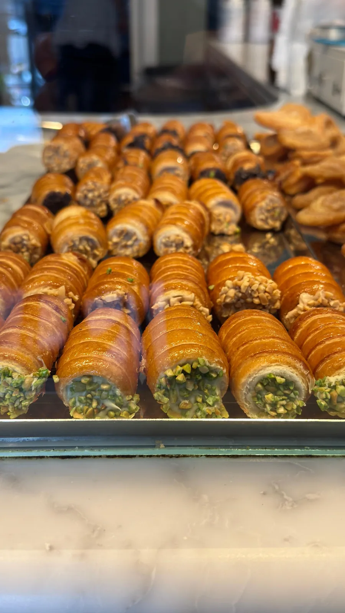
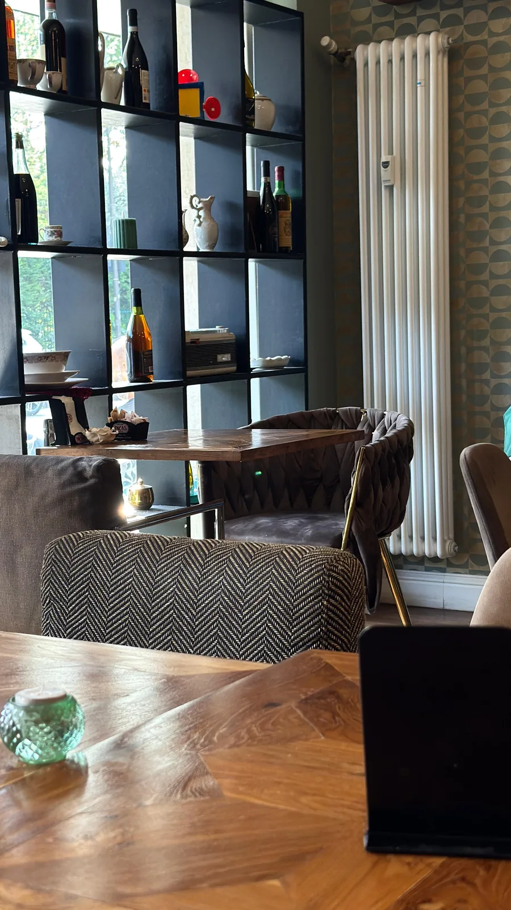
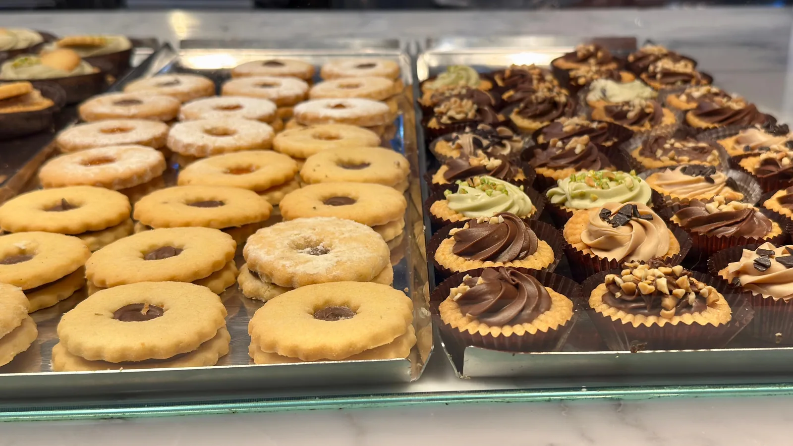
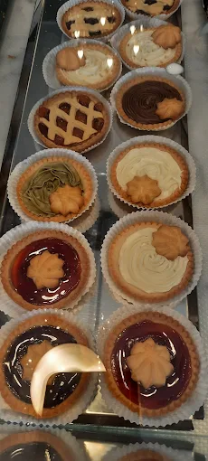
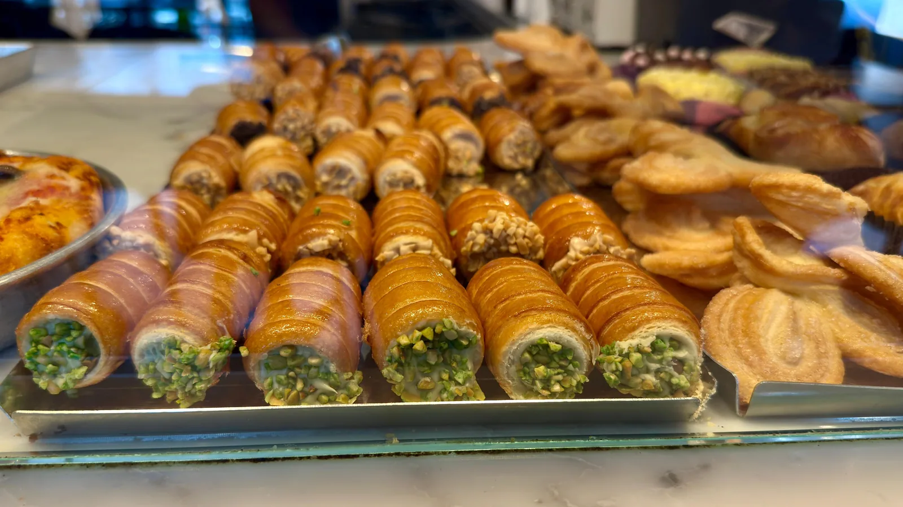
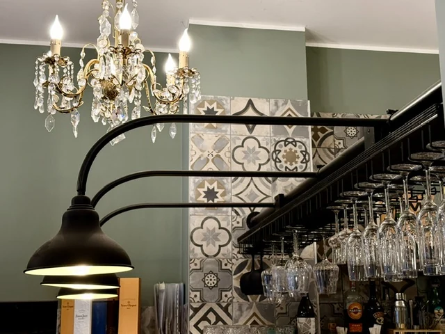
In un angolo, l'insegna smaltata gialla della Teleselezione. Accanto al bancone, le figurine dei Mondiali del Settanta e la foto di Pelé. Sugli scaffali, ventilatori a gabbia, telefoni a disco, cassette della Coca-Cola, vecchi numeri di Dylan Dog, una radio a transistor. Il Bistrot non è solo un caffè: è una piccola collezione di memorie italiane, distribuita tra le pareti come in una casa di famiglia che non vuole dimenticare. Fermarsi qui significa bere un caffè e, allo stesso tempo, sfogliare per un momento l'album degli anni che sono stati.
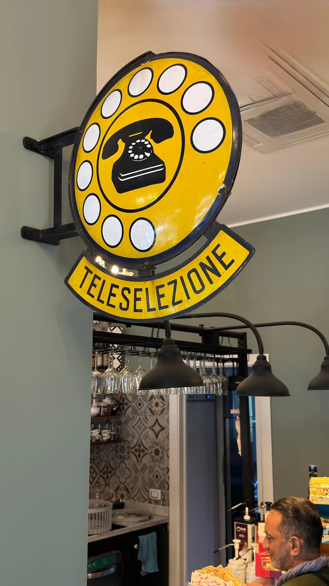
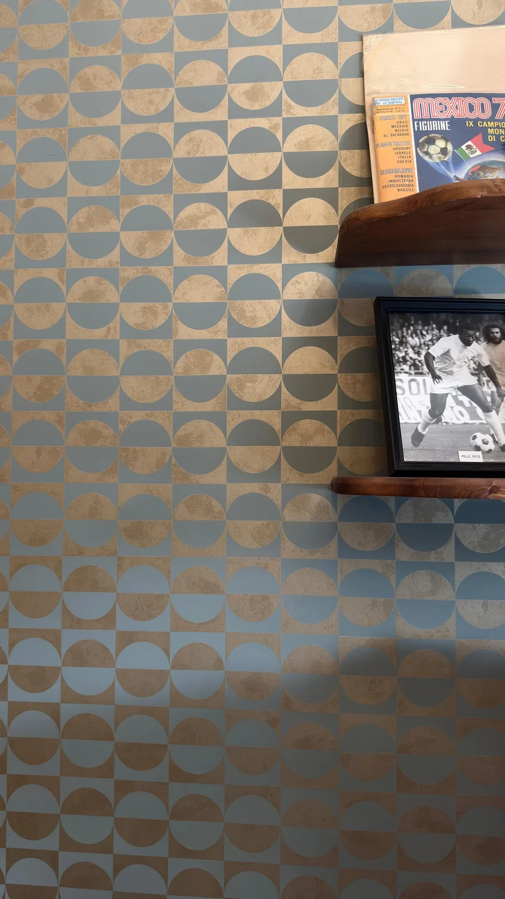
Oltre trenta proposte che attraversano la storia del bere bene: dai grandi classici del Novecento agli spritz del momento, fino alle creazioni della casa.
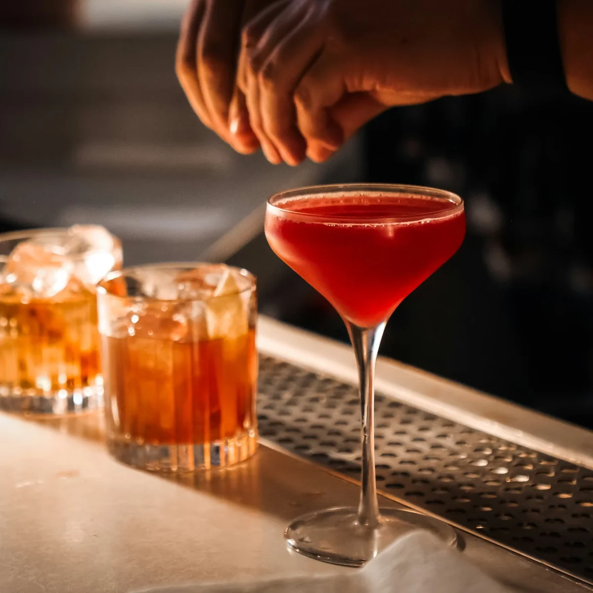